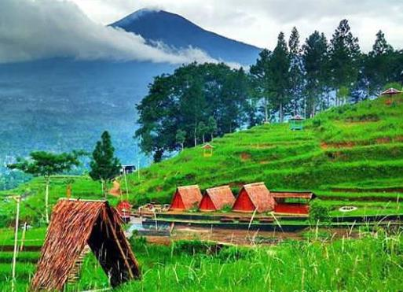
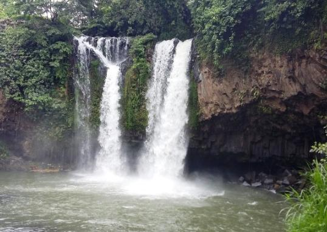
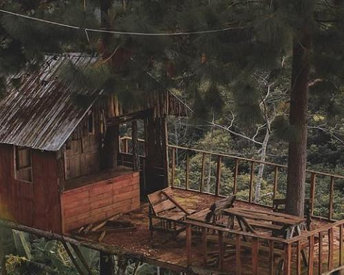

Pantai Widuri adalah sebuah pantai yang terletak di Desa Widuri, Kabupaten Pemalang, Jawa Tengah.

Bukit Tangkeban terletak di Desa Pulosari, Kecamatan Pulosari, Kabupaten Pemalang,Jawa Tengah.

Curug Bengkawah terletak di desa Sikasur kecamatan Belik kabupaten pemalang profinsi Jawa Tengah.

Letak Bukit Kukusan berada di kaki Gunung Slamet, tepatnya di Desa Gambuhan, Kecamatan Pulosari, Kabupaten Pemalang, Jawa Tengah.